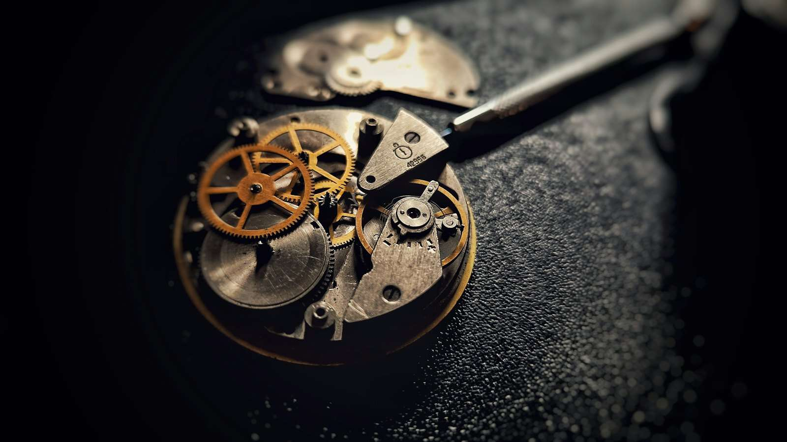

Watch & clock repairs · Wilson St, Newtown
Open three mornings. Listening all week.
J.H Wood looks after watches and clocks from a small Newtown shop, Thursday to Saturday mornings. Send a repair enquiry — with a photo — whenever it suits you. It'll be waiting when the doors open.
Thu–Sat · 8 AM – 12 PM
Online repair enquiries: open 24/7
Shop hours: Thursday – Saturday, 8 AM – 12 PM
Before you send it in
What's your watch doing?
Pick the symptom. You'll see what it commonly means, what to mention, and a repair enquiry that's already half filled in.
Commonly, it means
It stopped, and stayed stopped.
- On a quartz watch, very often just a flat battery
- On a mechanical watch, it may need winding — or a service if it won’t keep going
- On an automatic, it may simply not have been worn enough to stay wound
Mention whether it ticks once a second (quartz) or sweeps smoothly (mechanical).
Ask about my stopped watchCommonly, it means
Gaining, losing, never quite right.
- A few seconds a day is normal for many mechanical watches
- Minutes a day usually means it’s due for a service or regulation
- Sudden changes can follow a knock, or being near a magnet
Tell us roughly how much it gains or loses each day.
Ask about timekeepingCommonly, it means
Misted glass means moisture.
- Condensation under the glass means water has got in
- Seals and gaskets wear out over time
- Moisture can damage the dial and movement if left
Best not to keep wearing it — send an enquiry and bring it in soon.
Ask about water damageCommonly, it means
A crack across the crystal.
- Cracked or chipped watch glass can usually be replaced
- Deep scratches can make the dial hard to read
- A loose bezel or crown sometimes comes with it
A clear photo of the glass, straight on, helps the most.
Ask about new glassCommonly, it means
Comfort is part of the watch.
- Worn leather straps replaced
- Metal bracelets sized up or down to fit
- Broken pins, clasps and spring bars
Note the strap width if you know it — it’s often marked inside.
Ask about a strapCommonly, it means
Not a watch? Clocks too.
- Mantel and wall clocks that have stopped
- Chimes or strikes out of step
- Clocks overdue for a clean and service
Large clock? Send a photo first and ask how best to bring it in.
Ask about my clock